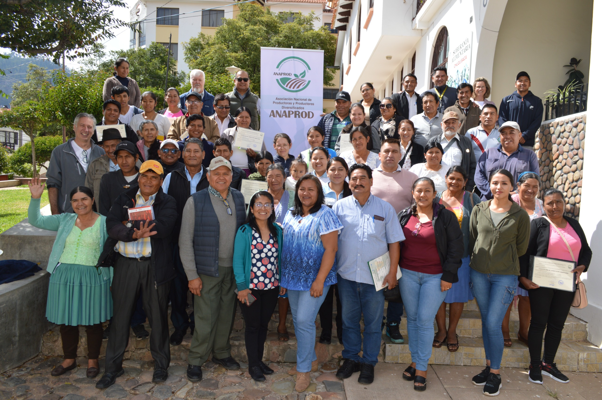
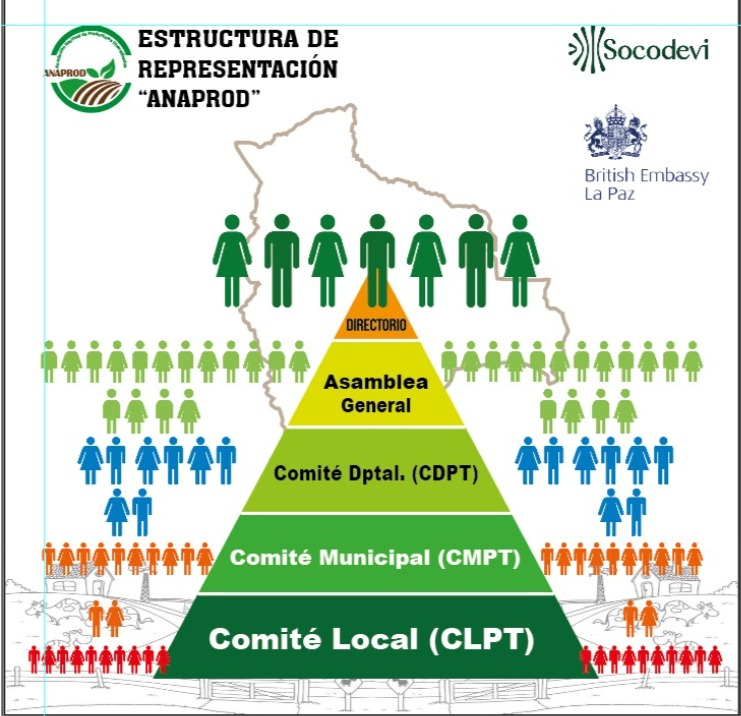

Asociación Nacional de Productoras y Productores Agropecuarios Diversificados
Organización civil sin fines de lucro que agrupa a miles de familias rurales en Bolivia
¿Qué es ANAPROD?
La Asociación Nacional de Productoras y Productores Agropecuarios Diversificados (ANAPROD). es una organización civil sin fines de lucro que agrupa a miles de familias rurales en Bolivia Nace el 1 de junio de 2021, con el propósito de mejorar las condiciones de vida de sus miembros. Reconocida mediante Resolución Ministerial N° 197/24, emitida por el Ministerio de la Presidencia en septiembre de 2024. Lo que le otorga personalidad jurídica nacional para operar en más de un departamento.

Visión
Promover la diversificación agropecuaria sostenible y competitiva para las familias miembro, con una estructura organizacional eficaz, eficiente, autosostenible y respetuosa de sus valores y principios.
Misión
Ser una organización asociativa innovadora que mejora las condiciones de vida de sus familias miembro con igualdad entre mujeres y hombres, y amigables con el medio ambiente.
Pilares estratégicos
Su finalidad es mejorar los ingresos y la calidad de vida de las familias miembro.
Los pilares estratégicos son:
- Identificación de cultivos estratégicos
- Igualdad de género
- Conservación del medioambiente
- Aplicación de valores y principios cooperativos.
CADENA DE VALOR VERDE
La Cadena de Valor Verde es un modelo de desarrollo sostenible que promueve la producción y consumo de productos agrícolas de manera responsable con el medio ambiente. Este enfoque busca reducir el impacto ambiental, fomentar prácticas agrícolas sostenibles y fortalecer la conexión entre productores, procesadores y consumidores. Al adoptar la Cadena Verde, se promueve la conservación de los recursos naturales, la biodiversidad y el bienestar de las comunidades rurales, al tiempo que se ofrece a los consumidores productos de alta calidad y respetuosos con el entorno.

ORGANIZACIÓN
La estructura organizativa de ANAPROD se basa en la participación activa de todas las familias productoras, comenzando en los Comités Locales de Productores de Tara (CLPT). Estos comités son el primer espacio de representación, donde las familias expresan sus necesidades, propuestas y decisiones. Desde allí, sus representantes (Delegada y Delegado) avanzan al Comité Municipal de Productores de Tara (CMPT), que articula y consolida las prioridades de cada localidad, garantizando que las voces de las familias se traduzcan en acciones conjuntas.
El modelo continúa con los Comités Departamentales de Productores de Tara (CDPT), responsables de coordinar las iniciativas regionales y fortalecer la integración entre municipios. Finalmente, estas representaciones convergen en la Asamblea General, máxima instancia democrática donde se toman las decisiones estratégicas y se elige al Directorio. Esta estructura en cadena asegura que cada familia, desde su comunidad, tenga un rol real en la orientación y el futuro de ANAPROD, manteniendo un sistema inclusivo, democrático y participativo.

- COCHABAMBA
- POTOSI
- CHUQUISACA
- ORURO
- LA PAZ
- TARIJA
Como ser Socio de Anaprod?
Contenido
Requisitos
Descripción de requisitos.
Procedimiento de afiliación (Costo)
Descripción del procedimiento.
Formulario de Registro de Intención
Nuestros proyectos
contenido
Tara
Descripción de Tara.
Generando nuevos proyectos.
Descripción.
Como puedes apoyar a Anaprod
Contenido
Donaciones
Información sobre donaciones.
Voluntariado
Información sobre voluntariado.